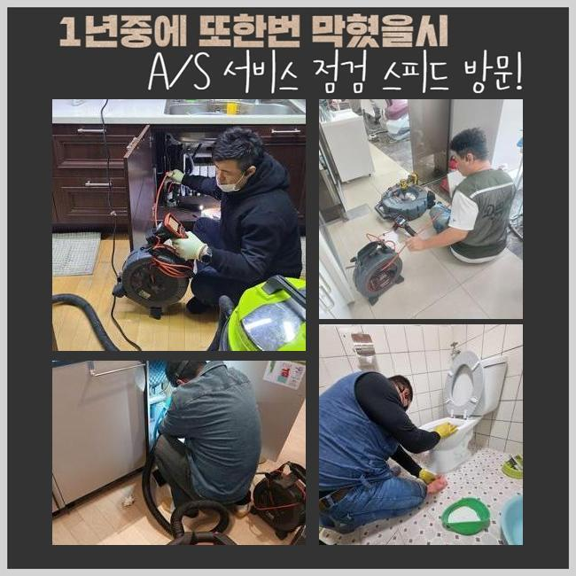
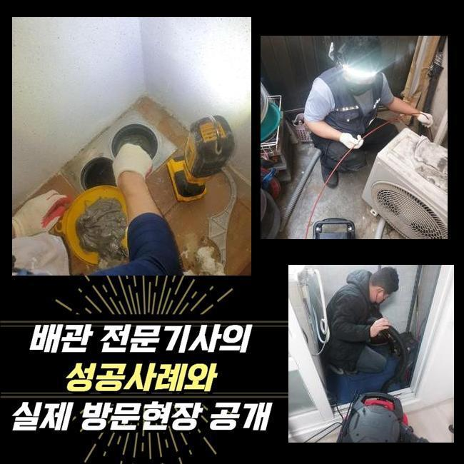
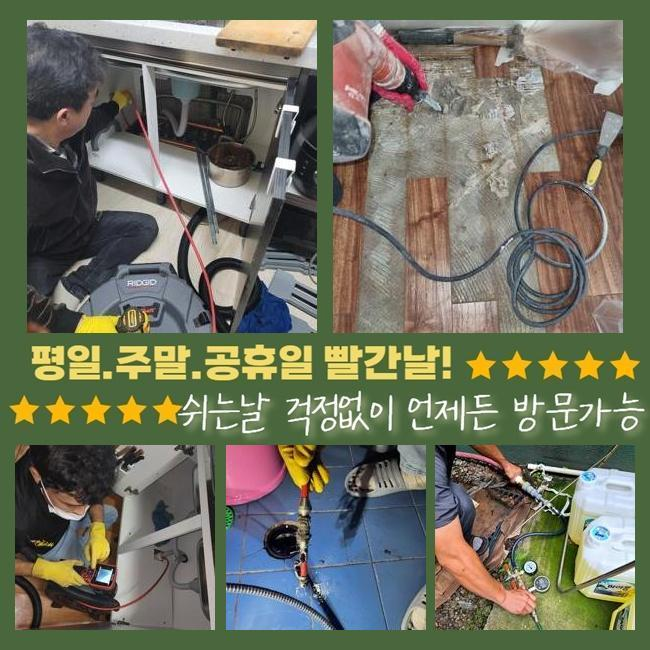
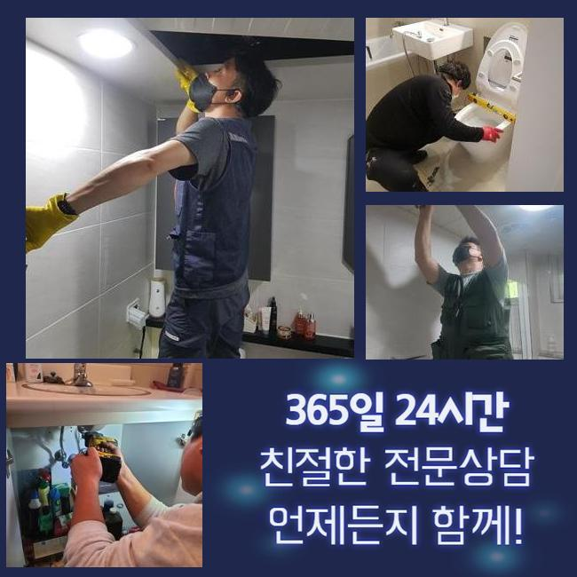
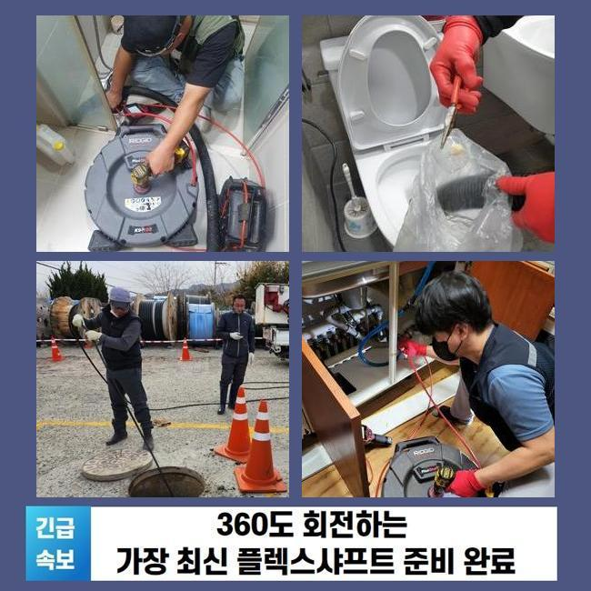

🏠 부천 역곡동하수도역류 중동 하수구뚫어주는업체 누수탐지
용인 싱크대막힘 전문 시공 후기

📋 작업 개요
- 위치: 용인
- 서비스 유형: 싱크대막힘, 하수구막힘, 배관막힘, 맨홀막힘, 누수수리, 역류해결, 뚫는업체, 배관청소, 고압세척
- 작업 일시: 2025. 4. 11. 16:32
- 업체명: 하수구수사대 (010-5615-2118)
🔍 문제 상황
부천 역곡동하수도역류 중동 하수구뚫어주는업체 누수탐지
멀지 않은 위치의 현장에서 하수구 시설의 막힘으로 정상영업이 불가하다고 빠르게 찾아와달라고 의뢰 내역을 접수했어요
식음료를 파는 곳이면 하수구 출입구가 폐쇄되는 증세로 수돗물을 운용하지 못하므로 당장 요리부터 못하니 장사를 할 수가 없겠죠
하수구를 빠르게 뚫어줘야 장사하시는 분의 손실을 완화할 수 있으므로 가까운 시일 내에 찾아뵙고 고쳐드리기로 했습니다
저희가 가자마자 고객님은 주방 밑의 배수구가 막힌건지 물 배출이 느릿해지고 옥외에 마련된 하수구 물이 올라오는 현상도 더해진 상황이라고 하셨어요
식당 안에 달려있는 주방의 배수구 쪽도 보고서 식당 바깥의 배관 역시 수습을 해드려야 하므로 다소 까다로운 시공에 들어가야했습니다
막혀있는 공간을 볼 때는 전체적으로 현장 상황을 낱낱이 확인해보고 작업에 필요한 기간을 예측해보고 시작합니다
복잡다단한 구조라거나 피해가 광범위할 시 개선하는게 좀 더 걸리니 약간 더 걸리기도 합니다
야외에 설치된 하수구 속을 조사해보려 봤더니 덮개부터 녹이 일어나 있는 상태였고 근처의 마감재까지 심히 젖어있다보니 정돈되지 않은 상태였습니다
부식된 곳에 파손이 일어나지 않게끔 집중력을 발휘하여 처리하려고 다짐하고 관로를 보기 시작했습니다

🔎 원인 분석
💡 전문가 진단: 정밀 진단 장비를 사용하여 슬러지의 고착 여부를 판명하고 타격/세척 작업을 실시했습니다.
가볍게만 보아도 오염원인들이 바로 드러났습니다
특히 기름질이 물 위에 덕지덕지 붙고 떠다니는 걸 즉시 인식할 수 있을 정도로 오염이 심해서 노출되는 지점의 세정에 실시해서 시야를 확보해야 했습니다
실내에 있는 배수구 먼저 작업에 들어간 다음 배관에 넣는 카메라를 내려보내서 확인하게 되는데요
건물의 파이프라인이 어떻게 이어져 있는지 분석한 다음엔 고압수의 물살의 힘으로 관로 전신에 부착된 유분기 어린 슬러지를 세척하기로 절차를 설정했습니다
이 상태로는 내시경을 진입시켜도 현황을 식별하는게 곤란할 것 같아서 석션기로 잔수를 흡입하는 업무에 먼저 임했습니다
이 석션기기는 마치 청소기처럼 특정 물체들을 끌어올리는 기능이기에 관로에 자리한 하수와 찌꺼기를 남김 없이 빨아당겨 없애는 것에 목적을 두고 있습니다
흡입력이 상당한 편이라 웬만한 딱딱하지않은 물체들은 쉽게 흡수가 되며 집수통 속으로 모두 모입니다
끈적이는 물질이나 돌덩이처럼 건조되어 있는 찌꺼기는 제거가 까다로워서 석션의 성능으로는 배관을 백프로 고쳐내는 가망성이 낮아지기는 해요
시공 초반과 말미에 늘상 이 석션기를 꼭 가동하고 있을 정도로 식당 하수구 청소를 위해서는 반드시 써야 하는 장치입니다
석션을 돌려서 배관 안을 쾌적하게 조성해두고서 카메라를 안으로 넣어봤어요
카메라를 가동함으로써 얽혀있는 형상으로 색다른 식으로 설치된 배관일 때도 놓치는 구석 없이 확인하며 막힌 구간과 오염의 정도에 대해서 단서를 찾아낼 수 있습니다

🔧 작업 과정
이번에 본 파이프를 떠올려보면 기름기가 잔뜩 고인 유분막이 많이 관찰됐습니다
계속 모이면서 커져버린 이 장애물이 오늘 다룰 하수구 막힘의 주범일 것 같다는 예측이 되더군요
요리나 설거지 중 수로 안으로 폐기된 기름기가 모여서 내부 공간을 채워갔고 그리하여 밖으로 내려갈 곳을 상실하게 되고 움직이지 못하자 결국 그나마 뚫린 위로 솟구친 것입니다
석션 샤프트를 번갈아가면서 청소를 하는 것도 중요하지만 하수들이 집합하는 바깥에 있는 맨홀 안도 개선을 해줘야 했습니다
샤프트를 말씀드리자면 장비의 끝 부분에 노커가 장착되어 있습니다
앞선 석션으로도 여전히 남은 거대한 오물이라거나 관로에 오래 눌어붙어있는 흡착물질을 긁어주거나 갈아낼 수 있습니다
앞서 사용한 샤프트와 석션 배관의 카메라까지 모조리 작동시켜야만 뚫음 청소가 만족스럽게 끝나며 꿈쩍도 하지 않는 배관의 물길도 재차 열 수 있습니다
상세하게 파이프라인을 들여다보니 오염도가 중증이라서 고압세척기를 통한 업무도 도움이 될 것 같았습니다
앞선 장비들의 활용으로 유속이 아까보다는 많이 나아짐이 느껴졌기에 고압세척 장치를 안으로 들여보내서 내부 정화를 이어갔습니다
강력하게 출수되는 물을 내보내주는 장비 몸체 위치를 설정해서 막힘 정도가 가장 심한 곳들을 순차적으로 삭제했습니다
꼼꼼하게 고압수를 쏘고나니 결국 통로를 가로막던 더러운 슬러지가 말끔하게 소멸했습니다!
작업 전 카메라로 배관상의 문제점을 제대로 밑바탕으로 깔아두고 끈기 있는 청소를 하수구에 고여있던 물과 찌꺼기들을 삭제시켜야하는 이번 현장에서도 대성공을 맛보게 됐네요
모든 절차들을 마무리하고 안쪽의 변화를 확인하니 옛날 모습이라곤 찾아볼 수 없게끔 무르기도 단단하기도했던 노폐물들이 파이프에서 다 빠져나갔으며 벽면에 붙었던 오일막들도 사라져서 배관이 더 깔끔해진 것을 드디어 목격하게 됐습니다
배수로 안에 뿌옇게 차있었던 물기도 모두 시원스레 없어지고 그 모든 더러운 찌꺼기가 해소되었습니다
아무래도 식품을 판매하는 곳에서는는 기름을 쓰는 양도 대폭 증가하기 때문에 그만큼 통수가 중단될 상황이 자주 재발됩니다!
잘게 썰린 음식물이나 물과 섞이지 못하는 기름기가 관로로 흘러가지 않게 주방시설을 활용할 때 조심해주셔야 할 부분이 있습니다
마감 단계에 이르렀다면 출수하고 경과를 보면서 작업이 원만하게 끝이 났는지 기능개선을 테스트합니다


✅ 작업 완료
싱크대 밸브에서 물을 의도적으로 흘려보내보면서 고압세척 작업을 한 외부하수구까지 물 이동이 끊기지 않고 유연하게 흘러나가는지 매의 눈으로 살펴보는 겁니다
아래로 내려보낸 물이 맨홀로 세차게 들어오는 것을 직접 확인하게 되었습니다
하수구 기능을 되돌려드리고 질의응답이 있다면 친절하게 받고 주변정돈 후 이동했습니다
하수구가 봉인되어 버리면 비용을 절약하려는 일념으로 뚫어뻥 등을 휘두르시다가 상태가 더 심화되기도 합니다
막힘이 생겼다고 연락하신다면 얼른 장소로 향하여 물막힘이 생긴 원인 규명 후 뚫어드리니 먼저 연락부터 주시면 되겠습니다



⚠️ 베란다 누수 및 방수 관리 방법
- ✅ 비가 많이 올 때 창틀 주변이나 아래층 천장에 얼룩이 생기는지 정기적으로 확인해 보세요.
- ✅ 우수관 주변 실리콘 마감이 들뜨거나 깨진 틈새가 있는지 손상 여부를 수시로 체크하세요.
- ✅ 베란다 바닥 타일의 줄눈(메지)이 소실되면 그 틈으로 물이 침투하여 누수가 유발됩니다.
- ✅ 누수 의심 증상 발견 시 방치하면 아래층 손실이 커지므로 즉시 전문가의 진단을 받으십시오.
💡 핵심 정리
- 확실한 장비 작업(내시경 점검 및 샤프트 스케일링)으로 원인을 뿌리 뽑습니다.
- 작업 후 1년 이내에 동일한 부위 재발 시 100% 무상 A/S 서비스를 보장합니다.
- 서울 · 경기 · 인천 전 지역에 24시간 언제든 긴급 출동할 수 있도록 항시 대기 중입니다.
❓ 자주 묻는 질문 (FAQ)
🚨 용인 싱크대막힘 문제로 고민이신가요?
정확한 원인 진단과 확실한 시공으로 재발 없는 해결을 약속드립니다.
24시간 긴급 출동 | 서울 · 경기 · 인천 전지역 | 1년 내 재발 시 무상 A/S